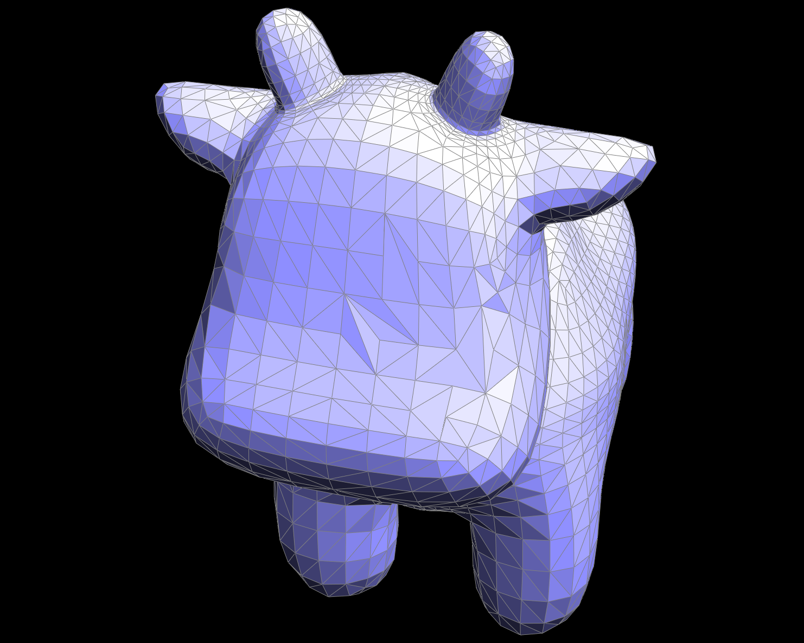
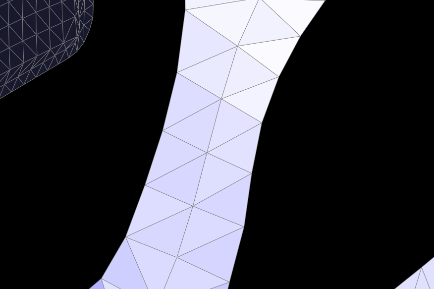
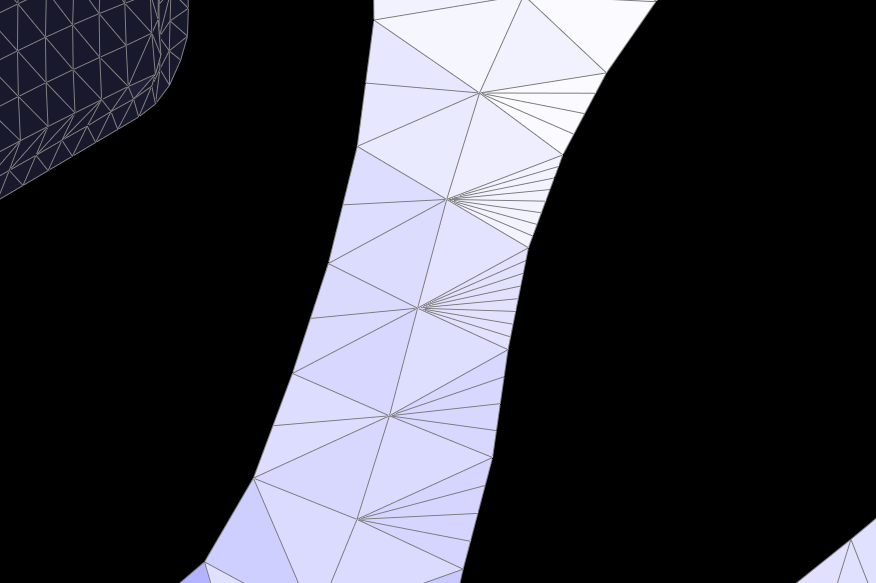
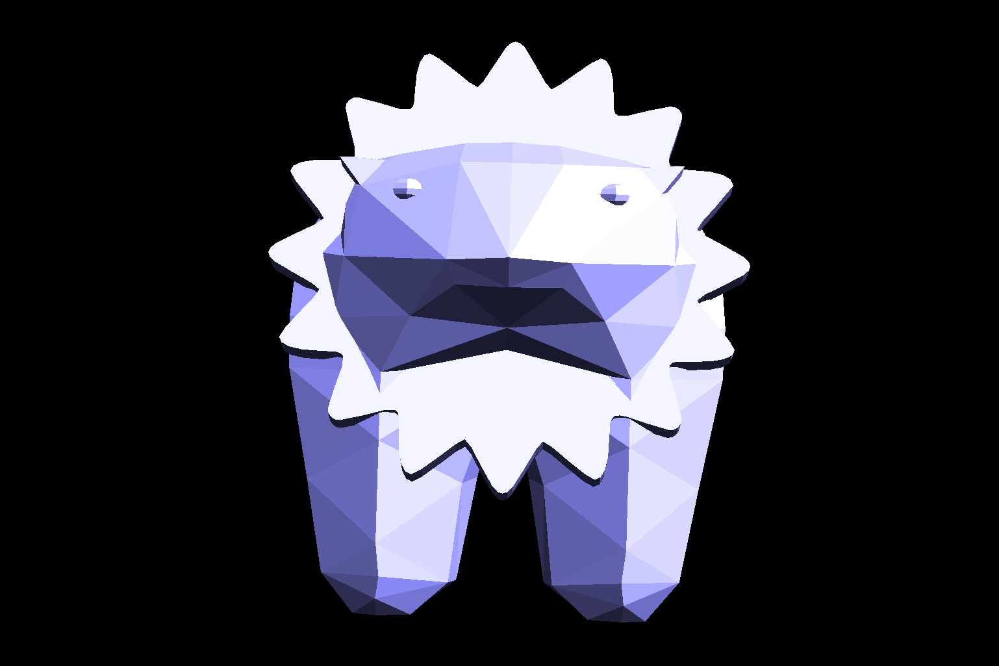
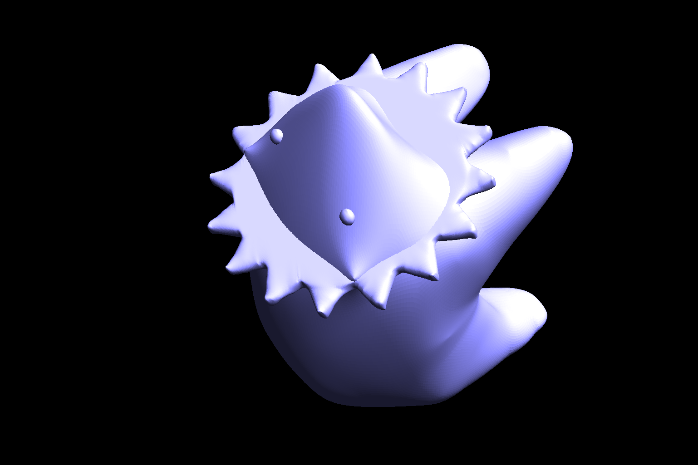

Overview
In this assignment, we implemented the de Casteljau Algorithm to build 2D Bezier curves. We then extended
this into 3D to build 3D Bezier Surfaces. We then implemented Edge Flip and Edge Split using the Halfedge
data structure. Then using a combination of flips and splits, we implemented mesh upscaling.
Overall, this was a fun project and we enjoyed learning about mesh editing and were surprised by how complex
it is just to display many meshes on our screens.
Section I: Bezier Curves and Surfaces
Task 1: Bezier Curves with 1D de Casteljau Subdivision
We implemented de Casteljau's algorithm for Bezier curves by recursively solving for the control points of
the curve at each subdivision level. We then used the control points to draw the curve. At each recursion step, we
lerp'ed between every two points in the current points vector to get the new control points until there was only
one point left. The lerp function is as follows, where /(t/) is the tuning parameter, a and b are the two points
to
lerp between.
$$lerp(t, a, b) = a + t * (b - a)$$
Progression of recursive control point calculations
 Evaluated point moving along Bezier curve
Evaluated point moving along Bezier curve
 Dragging control point
Dragging control point
Task 2: Bezier Surfaces with Separable 1D de Casteljau
We now extend the de Castelijau algorithm from evaluating Bezier curves to evaluating Bezier surfaces. The
algorithm was changed from performing lerps with control points in the 2D space to the 3D space. The logic of the
algorithm mostly remains the same.
 The teapot with Bezier surfaces
The teapot with Bezier surfaces
Section II: Triangle Meshes and Half-Edge Data Structure
Task 3: Area-Weighted Vertex Normals
We implemented area-weighted vertex normals for Phong shading, improving on smoothness of surfaces from the flat
shading method. To achieve this, we first used the halfedge data structure to traverse the neighbor vertices of a
center vertex. Two edges were found through the difference between the center vertex and two neighbor vertices.
Then we
used the cross product of the two edges to calculate each normal, and summed up all the normals. Lastly we
returned the approximate unit normal at that vertex to obtain Phong shading.
 Flat shaded teapot
Flat shaded teapot
 Phong shaded teapot
Phong shaded teapot
Task 4: Edge Flip
We have a thorough edge flip implementation that can use used to flip any edge in the mesh as long as it is not
a boundary edge.
We first assign variable names to all the halfedges, edges, vertices, and faces in the given configuration. Then
we reassign all
properties to the halfedges using the Halfedge::setNeighbors(...) function. After that we keep
reassigning all the other edges, vertices, and faces to have the correct correspopnding halfedge. Our assignments
are based on
the figure below.
 Helpful edge flip diagram
Helpful edge flip diagram
An interesting but frustrating problem we had was that the UI window was freezing up due to coding error when an
edge flip was attempted, so it was hard to debug through the UI. However, finally when the UI stopped freezing all
was working well. Seeing the frozen window led us to being safe and setting every variable, even if it might not
have been all needed, to make sure no holes were found. Another mistake was wrongly assuming that some halfedges
belonged in the two faces shown in the diagram, as well as wrongly assuming the next halfedge properties for some
halfedges. This was realized thanks to browsing a comment on Piazza.
 Before flipping edges
Before flipping edges

After flipping edges
Task 5: Edge Split
We have a thorough edge split implementation that can use used to split any edge in the mesh as long as it is
not a boundary edge.
It's implementation is quite similar to edge flipping. We first assign variable names to all the halfedges, edges,
vertices, and faces
in the given configuration; however, we have to create three new edges, six halfedges, two faces, and an extra
vertex. Then we reassign all
properties to the halfedges using the Halfedge::setNeighbors(...) function. After that we keep
reassigning all the other edges, vertices, and faces to have the correct correspopnding halfedge. Our assignments
are based on
the figure below.
Helpful edge split diagram
Again, we had issues with the UI freezing after incorrectly assigning pointer values. This was fixed by careful
review of the diagram.
Another issue we had is that we used 2 different "starting" diagrams while our initial pointer assignments stayed
this same. This caused
some holes in our tea pot.
|
Teapot before splitting
|
Teapot after splitting
|
|
Teapot before a combo of flip/split
|
Teapot after a combo of flip/split
|
We also implemented boundary edge splitting as an edge case. When we split an edge at the boundary, we perform
assignments only on one side. The logic is similar to the normal edge split but we don't assign anything past the
virtual boundary edge side.
|

Unsplit boundary edges on the beatle
|

Split boundary edges on the beatle
|
Task 6: Loop Subdivision for Mesh Upsampling
Loop subdivision for mesh upsampling allows us to obtain a smoother 3D object the more times we upsample. In the
first step, we update vertex positions using a weighted average of neighboring vertices.
For old vertices, we iterate through each vertex and calculate the new position. We also make sure to mark each
vertex
as old. For new vertices, we calculate
the position of where a vertex will be formed by iterating through all the edges and computing a weighted
average.
Next, we split each non-boundary edge. However,
to avoid an infinite loop, we have to first copy each edge into a queue and iterate through that. We mark these
vertices as new and also assign them their new position found earlier.
Next we flip any new edge that connects an old vertex and a new vertex. Finally, we iterate through each vertex
and
set their position to their new position.
|
Cube Level 0 Subdivision
|
Cube Level 1 Subdivision
|
 Cube Level 2 Subdivision
Cube Level 2 Subdivision
|
Cube Level 3 Subdivision
|
We can see that sharp corners and edges get duller and become smoother. Since loop subdivision uses a
weighted average
of a vertices of new and old neighbors, sharp corner and edges get "pulled in" and there is a dramatic loss in
volume. The faces
of the upscaled mesh are no longer flat. We can also see that after going down one level of loop subdivision,
the cube becomes asymmetric. However note that each face of the level 0 cube is already asymmetric as it is only
symmetric along the diagonal.
|
Pre-Split Cube Level 0 Subdivision
|
Pre-Split Cube Level 1 Subdivision
|
|
Pre-Split Cube Level 2 Subdivision
|
Pre-Split Cube Level 3 Subdivision
|
By presplitting edges on each face of the cube, the cube keeps more of it's shape. Again since vertex position is
calculated based on its neighboring old and new vertices, by presplitting and adding more vertices there is less
of the "pulling in" effect. Presplitting also makes each face of the cube symmetric. Thus after upscaling, it
remains symmetric.
Task 7: Design and Edit Your Own Mesh!
We tried smoothing out a 3D polygon mesh of a solar bear. The solar bear is composed of a low poly bear shape
with
a sun emoji ring that was extruded to 3D added on top. This was then exported to a
.dae file in Blender before loading in our mesh edit program. The solar bear was then subdivided
and
smoothed out using our loop subdivision implementation.

Smoothening process of solar bear

Another view of smoothed out bear